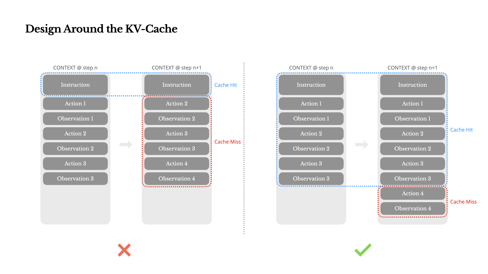
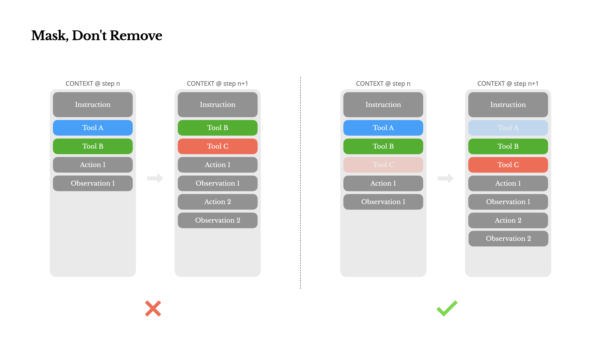
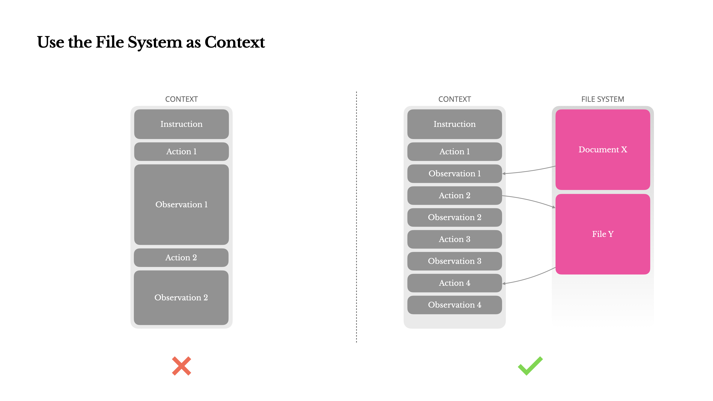
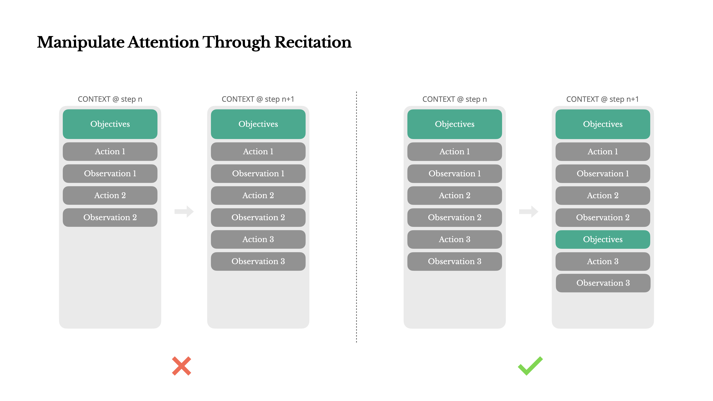
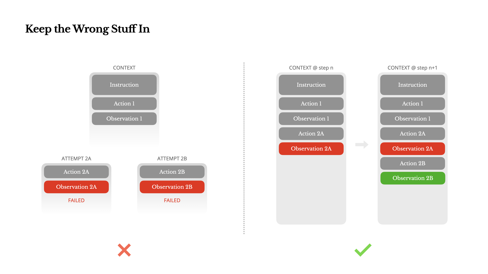
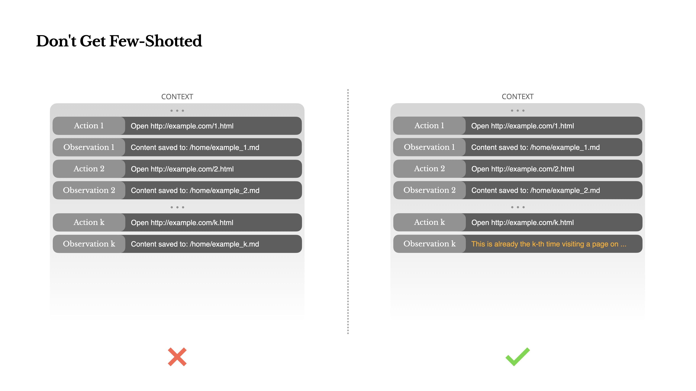

AI 智能体的上下文工程：构建 Manus 的经验教训
作者：季逸超 (Peak)
在项目伊始，我和团队面临一个关键抉择：我们应该使用开源基础模型来训练一个端到端的智能体模型，还是基于前沿模型的能力来构建一个智能体？
回想我从事自然语言处理（NLP）的第一个十年，我们可没有这样的奢侈选择。在那个遥远的年代（没错，已经七年了），模型在迁移到新任务之前，必须经过微调和评估。即使那时的模型与今天的大语言模型相比小得可怜，这个过程每次迭代也常常需要数周时间。对于快速迭代的应用，尤其是在找到产品市场契合度（PMF）之前，如此缓慢的反馈循环是致命的。这是我上一次创业经历的惨痛教训，当时我为语义搜索从头训练模型。然后，BERT 和 GPT 横空出世，我自研的模型一夜之间就过时了。讽刺的是，正是这些模型开启了“上下文学习”（in-context learning）的时代——以及一条全新的前进道路。
这个来之不易的教训让我们的选择变得清晰：Manus 决定押注于“上下文工程”（context engineering）。这使我们能在几小时内而不是几周内发布改进，并让我们的产品与底层模型保持正交关系：如果模型的进步是上涨的潮水，我们希望 Manus 是那艘船，而不是被牢牢固定在海底的柱子。
然而，上下文工程远非一帆风顺。它是一门实验科学——我们已经重构了四次智能体框架，每一次都是在发现了塑造上下文的更优方法之后。我们将这种架构搜索、提示词调整和经验猜测的手动过程，亲切地称为“随机研究生下降法”（Stochastic Graduate Descent）。它听起来不那么优雅，但确实有效。
这篇文章将分享我们通过自己的“SGD”所达到的局部最优解。如果你正在构建自己的 AI 智能体，我希望这些原则能帮助你更快地收敛。
围绕 KV 缓存进行设计
如果非要我只选一个指标，我认为 KV 缓存命中率是生产阶段 AI 智能体最重要的单一指标。它直接影响延迟和成本。要理解其中缘由，我们先来看看 ReAct 框架是如何运作的：
接收到用户输入后，智能体通过一系列工具使用来完成任务。在每次迭代中，模型根据当前上下文，从预定义的动作空间中选择一个动作。该动作随后在环境（例如 Manus 的虚拟机沙箱）中执行，并产生一个观察结果。这个动作和观察结果被追加到上下文中，形成下一次迭代的输入。这个循环持续进行，直到任务完成。
可以想见，上下文在每一步都会增长，而输出——通常是一个结构化的函数调用——则相对较短。这导致在智能体中，预填充（prefilling）和解码（decoding）的 token 比例与聊天机器人相比，严重偏斜。例如，在 Manus 中，平均输入与输出的 token 比例约为 100:1。
幸运的是，具有相同前缀的上下文可以利用前缀缓存（KV Caching），这极大地减少了首个 token 生成时间（TTFT）和推理成本——无论你使用的是自托管模型还是调用推理 API。我们谈论的不是一点点节省：以 Claude Sonnet 为例，缓存过的输入 token 成本为 0.30 美元/百万 token，而未缓存的则为 3 美元/百万 token——相差整整 10 倍。

从上下文工程的角度来看，提高 KV 缓存命中率涉及几个关键实践：
保持提示词前缀的稳定性。 由于大语言模型的特性，即使是单个 token 的差异也可能使该 token 之后的所有缓存失效。一个常见的错误是在系统提示词的开头包含时间戳——尤其是精确到秒的时间戳。当然，这能让模型告诉你当前时间，但它也扼杀了你的缓存命中率。
让你的上下文只追加，不修改。 避免修改之前的动作或观察结果。确保你的序列化过程是确定性的。许多编程语言和库在序列化 JSON 对象时，并不保证键的顺序稳定，这可能会悄无声息地破坏缓存。
在需要时明确标记缓存断点。 一些模型提供商或推理框架不支持自动的增量前缀缓存，而是需要手动在上下文中插入缓存断点。在指定这些断点时，要考虑到缓存可能过期，并至少确保断点包含系统提示词的末尾。
此外，如果你在使用 vLLM 等框架自托管模型，请确保 prefix_caching 已启用，并且你正在使用会话 ID（session ID）等技术来确保请求在分布式工作节点间的一致路由。
掩蔽，而非移除
随着你的智能体能力越来越强，它的动作空间自然会变得更加复杂——简单来说，就是工具的数量会爆炸式增长。最近 ToolkenGPT 的流行更是火上浇油。如果你允许用户可配置工具，相信我：总会有人将数百个稀奇古怪的工具插入你精心策划的动作空间。结果是，模型更容易选择错误的动作或采取低效的路径。简而言之，你那全副武装的智能体反而会变笨。
一个自然的反应是设计一个动态的动作空间——也许使用类似 RAG 的方式按需加载工具。我们在 Manus 中也尝试过。但我们的实验得出了一个明确的规则：除非绝对必要，否则避免在迭代中途动态增删工具。这主要有两个原因：
在大多数大语言模型中，工具定义在序列化后位于上下文的前部，通常在系统提示词之前或之后。因此，任何改动都会使后续所有动作和观察结果的 KV 缓存失效。
当之前的动作和观察结果仍然引用当前上下文中已不存在的工具时，模型会感到困惑。如果没有
constrained decoding，这通常会导致模式违规或幻觉出不存在的动作。
为了在解决这个问题的同时提高动作选择的准确性，Manus 使用了一种上下文感知的 logits processor 来管理工具的可用性。它不是移除工具，而是在解码时掩蔽（mask）token 的 logits，以根据当前上下文阻止（或强制）选择某些动作。

在实践中，大多数模型提供商和推理框架都支持某种形式的响应预填充（response prefill），这允许你在不修改工具定义的情况下约束动作空间。通常有三种函数调用模式（我们以 NousResearch 的 Hermes-2 为例）：
自动（Auto） – 模型可以选择调用函数，也可以不调用。通过仅预填充回复前缀来实现：
<|im_start|>assistant必需（Required） – 模型必须调用一个函数，但具体调用哪个不受限制。通过预填充至工具调用 token 来实现：
<|im_start|>assistant<tool_call>指定（Specified） – 模型必须从一个特定的子集中调用函数。通过预填充至函数名的开头来实现：
<|im_start|>assistant<tool_call>{"name": “browser_
利用这一点，我们通过直接掩蔽 token 的 logits 来约束动作选择。例如，当用户提供新输入时，Manus 必须立即回复而不是执行动作。我们还有意将动作名称设计成具有一致的前缀——例如，所有与浏览器相关的工具都以 browser_ 开头，而命令行工具则以 shell_ 开头。这使我们能够轻松地强制智能体在特定状态下只从某个工具组中进行选择，而无需使用有状态的 logits 处理器。
这些设计有助于确保 Manus 的智能体循环即使在模型驱动的架构下也能保持稳定。
将文件系统用作上下文
现代前沿大语言模型现在提供 128K token 甚至更长的上下文窗口。但在现实世界的智能体场景中，这通常是不够的，有时甚至是一种负担。有三个常见的痛点：
观察结果可能非常巨大，尤其是当智能体与网页或 PDF 等非结构化数据交互时，很容易超出上下文限制。
模型性能在超过一定上下文长度后会下降，即使窗口在技术上支持更长的长度。
长输入成本高昂，即使有前缀缓存。你仍然需要为传输和预填充每个 token 付费。
为了解决这个问题，许多智能体系统采用了上下文截断或压缩策略。但过于激进的压缩不可避免地会导致信息丢失。问题是根本性的：一个智能体，其本质上必须基于所有先前的状态来预测下一步行动——而你无法可靠地预测哪个观察结果会在十步之后变得至关重要。从逻辑上讲，任何不可逆的压缩都伴随着风险。
这就是为什么我们将文件系统视为 Manus 的终极上下文：它的大小无限，天然持久，并且智能体可以直接对其进行操作。模型学会了按需读写文件——将文件系统不仅仅用作存储，而是作为结构化的外部记忆。

我们的压缩策略总是被设计为可恢复的。例如，只要保留了 URL，网页的内容就可以从上下文中丢弃；只要文件路径在沙箱中可用，文档的内容就可以省略。这使得 Manus 可以在不永久丢失信息的情况下缩减上下文长度。
在开发这个功能时，我常常在想，一个状态空间模型（State Space Model, SSM）要在智能体场景中有效工作需要什么。与 Transformer 不同，SSM 缺乏完全的注意力机制，难以处理长程反向依赖。但如果它们能掌握基于文件的记忆——将长期状态外化，而不是保存在上下文中——那么它们的速度和效率可能会解锁一类全新的智能体。智能体化的 SSM 可能是 Mamba 的真正继承者。
通过“复述”来引导注意力
如果你使用过 Manus，你可能已经注意到一个有趣的现象：在处理复杂任务时，它倾向于创建一个 todo.md 文件，并随着任务的进展逐步更新它，勾选已完成的项目。
这不仅仅是可爱的行为——它是一种刻意引导注意力的机制。

在 Manus 中，一个典型任务平均需要大约 50 次工具调用。这是一个很长的循环——由于 Manus 依赖大语言模型进行决策，它很容易偏离主题或忘记早期的目标，尤其是在长上下文或复杂任务中。
通过不断重写待办事项列表，Manus 正在将它的目标“复述”到上下文的末尾。这将全局计划推入模型的近期注意力范围，避免了“迷失在中间”（lost-in-the-middle）的问题，并减少了目标偏离。实际上，它是在用自然语言来引导自己的注意力偏向任务目标——而无需特殊的架构更改。
保留失败的尝试
智能体会犯错。这不是一个 bug，而是现实。语言模型会产生幻觉，环境会返回错误，外部工具会行为异常，各种意想不到的边缘情况总会出现。在多步骤任务中，失败不是例外，而是循环的一部分。
然而，一个常见的冲动是隐藏这些错误：清理轨迹，重试动作，或者重置模型状态，然后寄希望于神奇的“let's think step by step”。这感觉更安全、更可控。但它是有代价的：抹去失败就消除了证据。没有证据，模型就无法适应。

根据我们的经验，改善智能体行为最有效的方法之一简单得令人意外：将错误的尝试保留在上下文中。当模型看到一个失败的动作——以及由此产生的观察结果或堆栈跟踪（stack trace）——它会含蓄地更新其内部信念。这会改变它对类似动作的先验判断，减少重复同样错误的机会。事实上，我们认为错误恢复是真正智能体行为最清晰的指标之一。然而，在大多数学术研究和公开基准测试中，它仍然代表性不足，这些研究往往只关注理想条件下的任务成功率。
警惕“少样本学习”陷阱
少样本学习（Few-shot learning）是改善大语言模型输出的常用技术。但在智能体系统中，它可能会以微妙的方式适得其反。
语言模型是出色的模仿者；它们会模仿上下文中的行为模式。如果你的上下文中充满了相似的过往动作-观察对，模型就会倾向于遵循这种模式，即使它已不再是最优选择。
这在涉及重复性决策或动作的任务中可能很危险。例如，当使用 Manus 协助审查一批 20 份简历时，智能体常常会陷入一种节奏——仅仅因为它在上下文中看到了类似的行为，就重复相似的动作。这会导致漂移、过度泛化，有时甚至是幻觉。

解决方法是增加多样性。Manus 在动作和观察结果中引入了少量结构化的变动——不同的序列化模板、替代性的措辞、顺序或格式上的微小噪音。这种受控的随机性有助于打破模式，并调整模型的注意力。换句话说，不要让少样本学习把你带进思维定式。你的上下文越统一，你的智能体就越脆弱。
结语
上下文工程仍然是一门新兴科学——但对于智能体系统来说，它已经至关重要。模型可能会变得更强、更快、更便宜，但无论多强的原始能力都无法取代对记忆、环境和反馈的需求。你如何塑造上下文，最终定义了你的智能体的行为方式：它的运行速度，它的恢复能力，以及它的扩展潜力。
在 Manus，我们通过反复的重写、死胡同和数百万用户的真实世界测试学到了这些教训。我们在此分享的一切并非放之四海而皆准的真理——但这些是于我们而言行之有效的模式。如果它们能帮助你哪怕只避免一次痛苦的迭代，那么这篇文章就完成了它的使命。
智能体的未来，将由一个个上下文逐一构建而成。请精心设计它们吧。